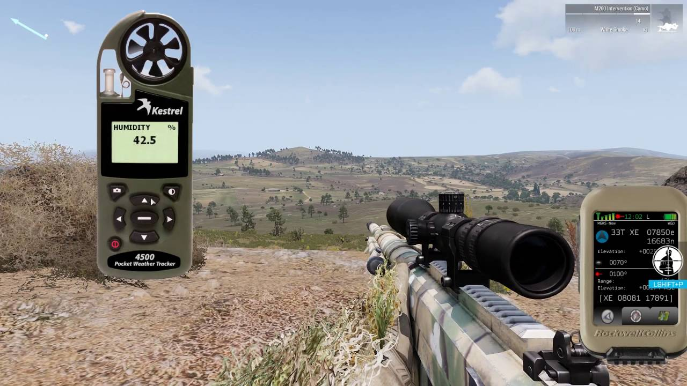

Selles viimases osas auhinnatud Arma seerias saadetakse mängijad Vahemere saartele Altis (270 km²) ja Stratis (20 km²), kus mitmed osapooled võitlevad ülemvõimu nimel. Mine lahingusse jalgsi, sõida soomukitega või lenda helikopterite ja hävitajatega – Arma 3 viib sind taktikaliste võimaluste maailma. Pakub laia valikut üksik- ja mitmikmängu sisu, üle 20 sõiduki ja 40 relva ning lõputuid võimalusi sisu loomiseks, Arma 3 on PC platvormi esmaklassiline sõjamäng. Autentne, mitmekesine, avatud – Arma 3 saadab sind sõtta.
Arma 3 on avatud maailma, sõjaline taktikaline tulistamismäng, mis toimub Vahemere piirkonnas 2030. aastatel. Mängu süžee keskendub NATO vägedele, kes on vastamisi Ida-Euroopa ja Lähis-Ida koalitsiooni vastase invasiooniga. Mängija võtab kapten Scott Milleri rolli, kes peab ellu jääma ja juhtima oma meeskonda vaenlase tagalas, leides samal ajal viisi, kuidas lõpetada konflikt.
Arma 3 pakub realistlikku ja keerukat sõjalis-taktikalist mängukogemust. Mäng sisaldab ulatuslikke avatud maailmu, erinevaid sõidukeid ja relvi ning realistlikke lahingusituatsioone. Mängijad saavad osaleda üksikmängija kampaanias või mitmikmängus, kus nad võivad teha koostööd või võistelda teineteise vastu. Mängu täiendavad modifikatsioonid ja kasutaja loodud sisu, mis annavad sellele pikaajalise väärtuse.
Arma 3 on tuntud oma realismi ja keerukuse poolest, mis eristab seda teistest sõjamängudest. Mängu visuaalne ilme ja heli on muljetavaldavad, pakkudes kaasahaaravat lahingukogemust. Mitmikmäng on selle tõeline tugevus, pakkudes mitmeid režiime ja ulatuslikku modide tuge, mis hoiavad mängukogemuse värskena. Kuigi õppimiskõver võib olla järsk, on see mäng neile, kes otsivad realistlikku sõjalis-taktikalist simulaatorit, kindlasti tasuv. PC platvormil on mängu graafika ja jõudlus parimad, võrreldes muude võimalike platvormidega, mis võivad olla piiratud.